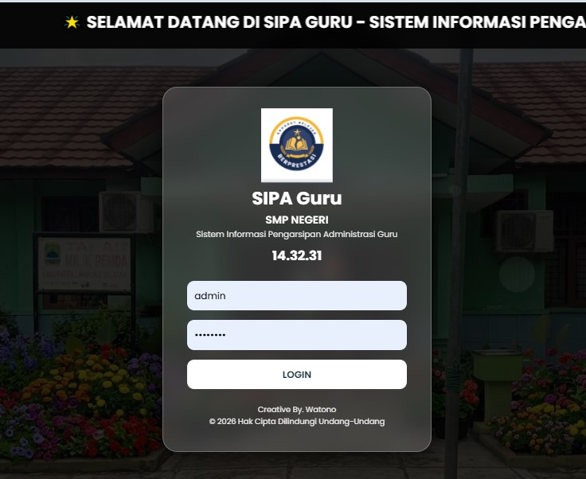
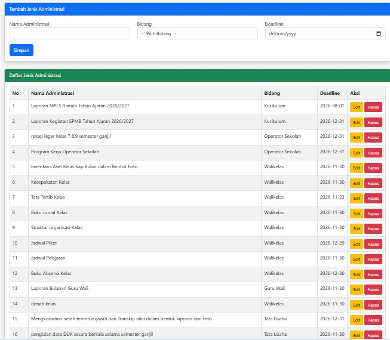
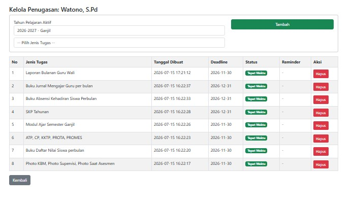
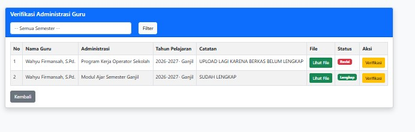
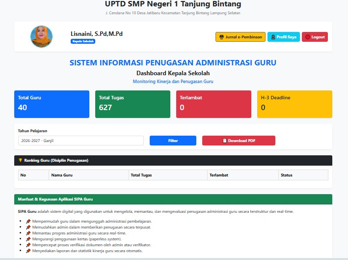
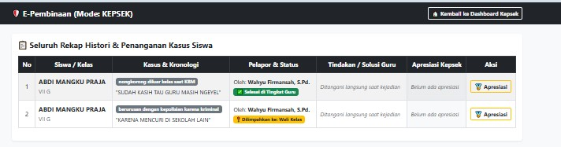

B. Sipaguru & E-Pembinaan
Target Pengguna: Kepala Sekolah & GuruDeskripsi & Keunggulan Aplikasi
Platform terpadu untuk pengarsipan dokumen administrasi guru dan sekolah sekaligus sistem pencatatan pelanggaran serta prestasi siswa berbasis poin untuk mendukung pembinaan karakter yang terstruktur dan objektif.
Fitur-Fitur Utama:
- E-Arsip Administrasi Guru: Digitalisasi perangkat pembelajaran, RPP/Modul Ajar, dan jurnal mengajar.
- Pencatatan Poin Pelanggaran: Catatan kedisiplinan siswa berbasis poin yang transparan.
- Poin Prestasi & Penghargaan: Dokumentasi capaian siswa di bidang akademik maupun non-akademik.
- Surat Pemanggilan & Pembinaan: Generasi otomatis surat pemberitahuan ke orang tua siswa jika akumulasi poin mencapai batas tertentu.
Galeri Tampilan Fitur:








